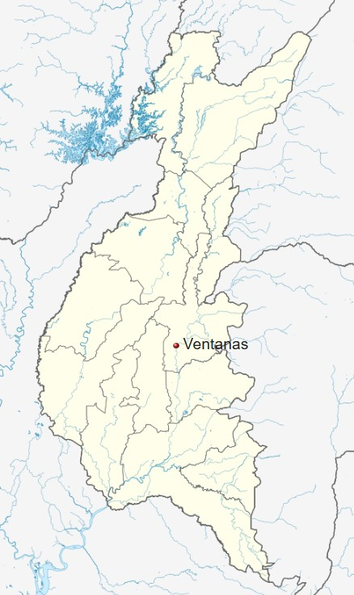

Forma parte de la área metropolitana de Babahoyo, pues su actividad económica, social y comercial está fuertemente ligada a
Babahoyo, siendo "ciudad dormitorio" para miles de trabajadores que se trasladan a aquella urbe por vía terrestre diariamente.
El conglomerado alberga a más de 300.000 habitantes.
| Situación geográfica | |||
|---|---|---|---|
| Extensión | Población | ||
| 18 km² | Hombres | Mujeres | Niños |
| 19 032 | 19 136 | 15 670 | |
Según datos del INEC 2010, la ciudad de Ventanas tenía:en total 38 168 habitantes
